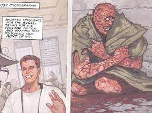

Peter Parker Ruins
Peter Benjamin Parker nació como el hijo de Richard y Mary Fritzpatrick- Parker. Por razones desconocidas, Peter fue criado por sus tíos Ben y May, quienes lo vieron como su propio hijo..
Peter siempre destacó por su intelecto, lo que lo hizo capaz de ingresar a la Universidad Empire State. Lamentablemente, su tío Ben murió por razones desconocidas, dejando a esposa y sobrino con un miembro menos, y más deudas financieras. Para mantener a su tía, Peter tuvo que trabajar como fotógrafo en el Daily Bugle. Mientras trabajaba, conoció a Philip Sheldon, un escritor convencido de que las frecuentes desgracias que ocurrían, debieron haber sido maravillas, y por irónico que pareciera, detestaba al joven de Queens.
Peter estaba trabajando en un experimento de la universidad, el cual involucraba la irradiación de una araña. Sin embargo, esta última mordió a Peter, dando por arruinado el experimento. Parker volvió al Bugle, donde explicó su pequeña desventura a los presentes, incluido a Sheldon, a quien le tendió la mano como cortesía. La pesadilla iniciaría al momento de salir del edificio, pues en palabras de Philip, el muchacho sufrió una erupción en la piel que acabó con su cuero cabelludo, fragmentó su piel, eliminó sus pupilas (posiblemente dejándolo ciego), y deformó su carne en la zona de su boca. Peter fue atendido por un médico, quienes descubrieron que la mordedura de araña radioactiva había dado origen a un peligroso virus mutante, similar al cáncer. De alguna forma, Parker acabó como un vagabundo infeccioso, usando nada más que una manta para cubrirse. No mucho después, Sheldon murió a causa suya, debido a la mano que le tendió.